main
members
research
photos
publications
contact
Reasearch
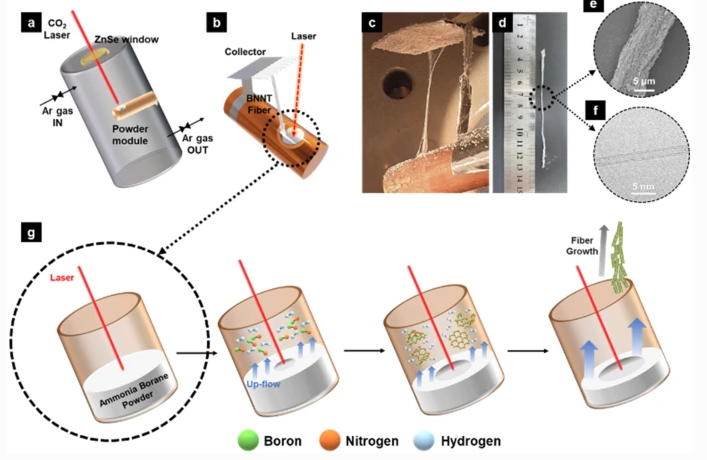
1.
D. S. Bae, C. H. Kim, H. S. Lee, O. Khater, H. M. Shin, K. H. Lee*,
M. J. Kim*
, "Spontaneous formation of boron nitride nanotube fibers by boron impurity reduction in laser ablation of ammonia borane."
Nano Convergence
9, 1-10 (2022)
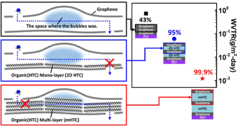
2.
Y. J. Kim, T. H. Seo, Y. H. Kim, E. K. Suh, S. Bae, J. Y. Hwang, J. W. Kim, Y. J. Kang*,
M. J. Kim*
, S. H. Ahn*, "Two-Dimensional Stacked Composites of Self-Assembled Alkane Layers and Graphene for Transparent Gas Barrier Films with Low Permeability." Nano Letters 22, 286-293 (2022)
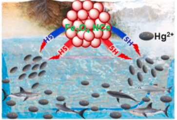
3.
S. Venkateswarlu, M. Y. Yoon*,
M. J. Kim*
*, "An environmentally benign synthesis of Fe3O4 nanoparticles to Fe3O4 nanoclusters: Rapid separation and removal of Hg (II) from an aqueous medium." Chemosphere 286, 131673 (2022)
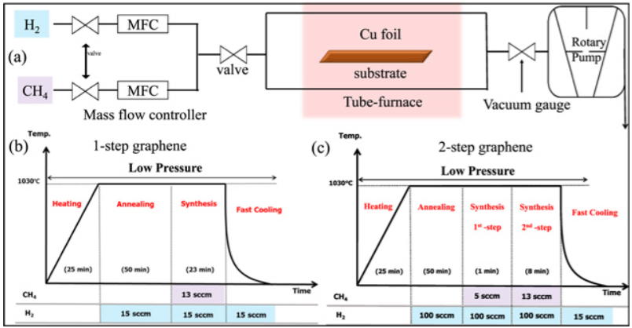
4.
J. H. Hwang, B. K. Shrestha, J. H. Kim, T. H. Seo, C. H. Park*,
M. J. Kim*
, "Nanoscale layer of a minimized defect area of graphene and hexagonal boron nitride on copper for excellent anti-corrosion activity." Nanotechnology 33, 055601 (2021)
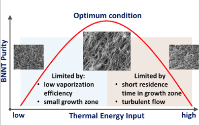
5.
K. S. Kim*, G. Sigouin, H. J. Cho, M. Couillard, M. Gallerneault, S. Y. Moon, H. S. Lee,
M. J. Kim,
S. G. Jang, H. M. Shin"Insight into BN Impurity Formation during Boron Nitride Nanotube Synthesis by High-Temperature Plasma." ACS omega 6, 27418-27429 (2021)
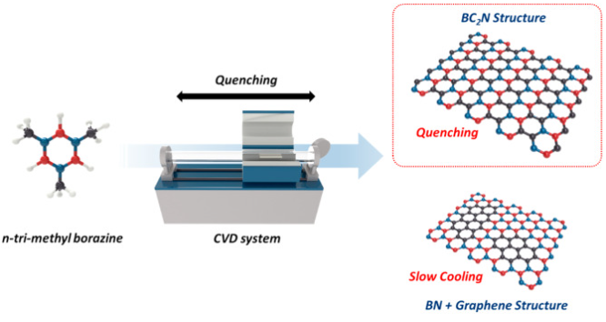
6.
T. H. Seo, W. K. Lee, K. S. Lee, J. Y. Hwang, D. I. Son, S. H. Ahn, H. J. Cho,
M. J. Kim*
, "Dominant formation of h-BC2N in h-BxCyNz films: CVD synthesis and characterization." Carbon 182, 791-798 (2021)
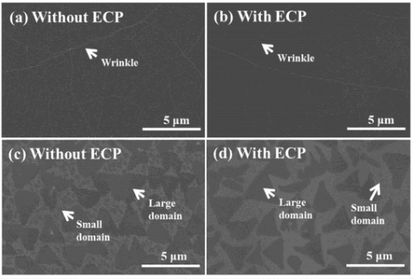
7.
C. H. Lee, G. B. Choi, E. M. Kim, J. H. Lee, J. G. Lee, H. G. Moon,
M. J. Kim,
Y. A. Kim*, T. H. Seo*, "Gas Barrier Performance of Hexagonal Boron Nitride Monolayers Grown on Copper Foils with Electrochemical Polishing" Applied sciences 11, 4599 (2021)
8.
T. H. Seo, W. Lee, K. S. Lee, J. Y. Hwang, D. I. Son, S. H. Ahn, H. J. Cho,
M. J. Kim*
, “Light emitting 2-dimensional membrane made of boron, carbon, nitrogen” (In review in Carbon)-corresponding author
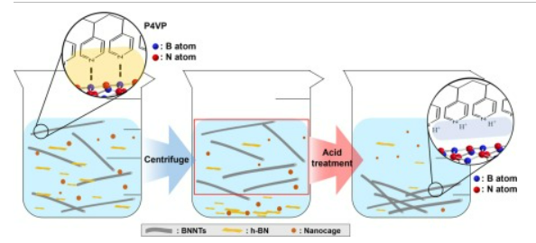
9.
S-H Lee, M. Kang, H. Lim. S. Y. Moon,
M. J. Kim,
S. G Jang, H. J. Lee, H. Cho, S. Ahn “Purification of boron nitride nanotubes by functionalization and removal of poly(4-vinylpyridine)” Applied Surface Science 555, 149722 (2021)
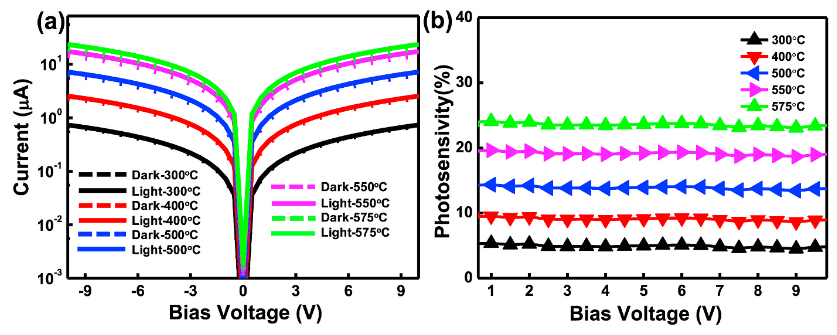
10.
M. Krishnaiah, Y. J. Jeong, R. K. Mishra,
M. J. Kim,
J. Song, S. H. Jin, “Temperature-Time profile effects on evolution of physical and electronic properties in visible light Cu2CoSnS4 photodetectors” Materials Science in Semiconductor Processing 121, 105443 (2021)
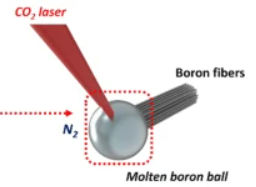
11.
H. Cho, J. Kim, J. H Hwang, C. S. Kim, H. Lee*,
M. J. Kim*
, “Single- and double-walled boron nitride nanotubes: Controlled synthesis and application for water purification” Scientific Reports 10, 7416 (2020)-corresponding author
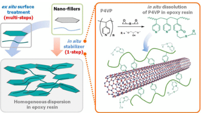
12.
H. Lim, M. A. Islam, M. M. Hossain, H. Yun,
M. J. Kim,
T. H. Seo, J. R. Hahn, B. J. Kim, S. G. Jang, “Effect of Polymeric In Situ Stabilizers on Dispersion Homogeneity of Nanofillers and Thermal Conductivity Enhancement of Composites” Langmuir 36, 5563-5570 (2020)
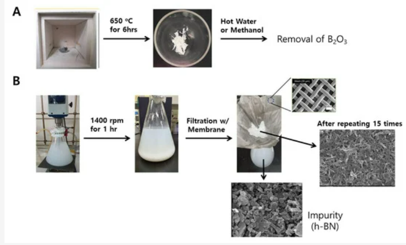
13.
S-H Lee,
M. J. Kim,
S Ahn, B. Koh, “Purification of Boron Nitride Nanotubes Enhances Biological Application Properties” Molecular Sciences 21, 1529 (2020)
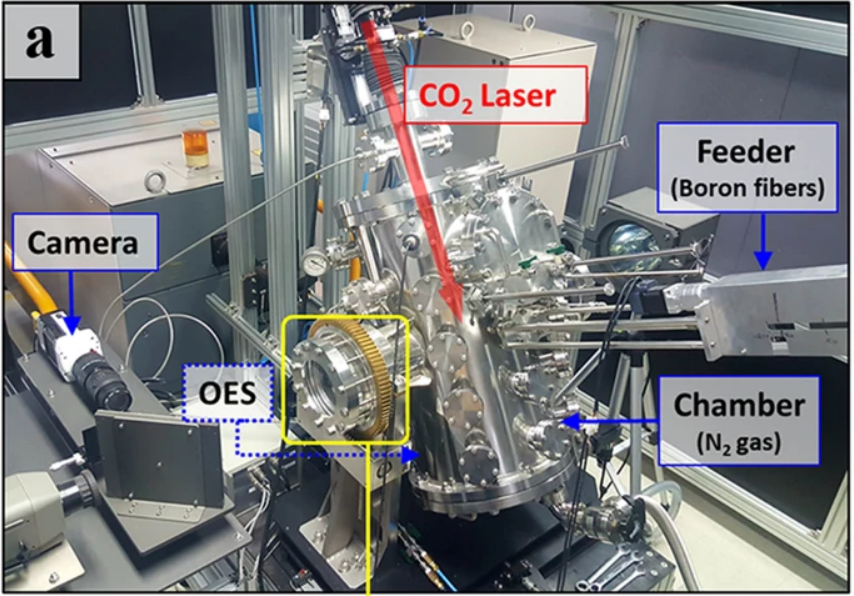
14.
J. H. Kim, H. Cho, T. V. Pham, J. H. Hwang, S. Ahn, S. K. Jang, H. Lee, C. Park, C. S. Kim*,
M. J. Kim*
, “Dual growth mode of boron nitride nanotubes in high temperature pressure laser ablation” Scientific Reports 9, 15674 (2019)-corresponding author
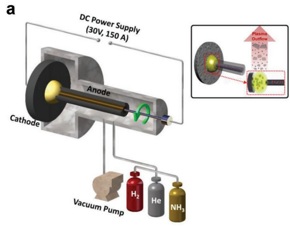
15.
T. V. Pham, J. G. Kim, J. Y. Jung, J. Kim, H. Cho, T. H. Seo, H. Lee, N. D. Kim*,
M. J. Kim*
, “High areal capacitance of N-doped graphene synthesized by arc discharge” Advanced Functional Materials 1905511 (2019) – corresponding author
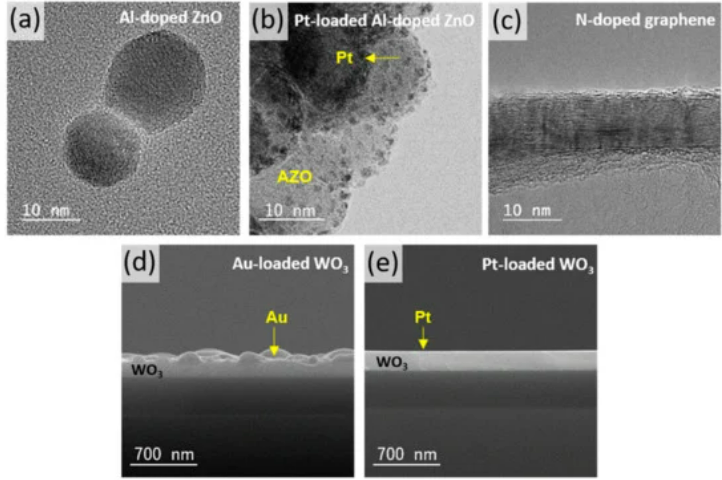
16.
R. Yoo, H-S Lee, W. Kim, Y. Park, A. Koo, S-H Jin, T. V. Pham,
M. J. Kim,
S. Maeng, W. Lee, “Selective detection of nitrogen-containing compound gases” Sensors 19, 3565 (2019)
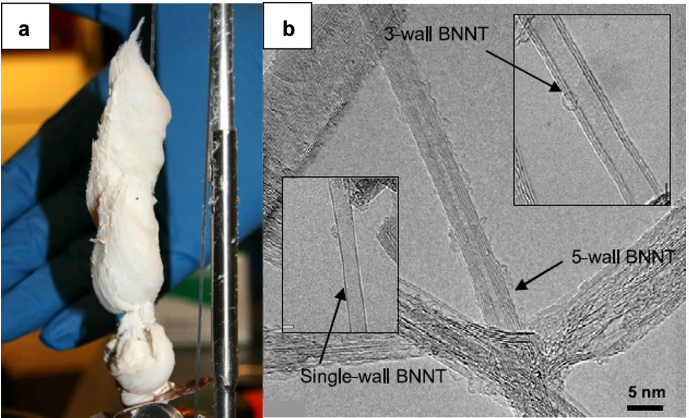
17.
J. H. Kim, T. V. Pham, J. H. Hwang, C. S. Kim,
M. J. Kim*
, “Boron nitride nanotubes: synthesis and applications”
Nano Convergence
5, 17 (2018)-corresponding author
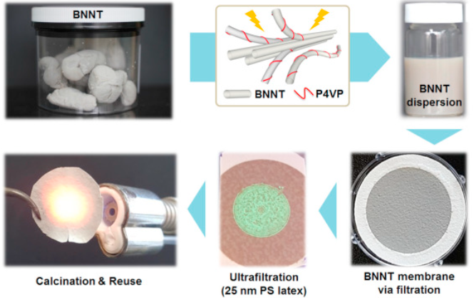
18.
H. Lim, B. L. Suh,
M. J. Kim,
H. Yun, J. Kim, B. J. Kim, S. G. Jang, “High-performance, recyclable ultrafilteration membranes from P4VP-assisted dispersion of flame-resistive boron nitride nanotubes” Journal of Membrane Science 551, 172 (2018)
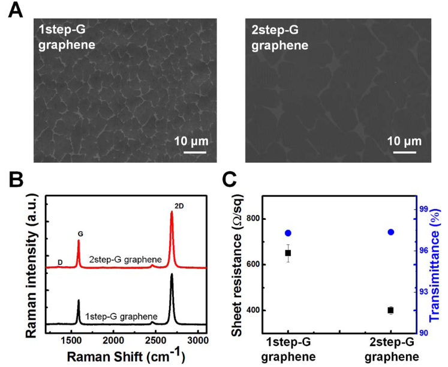
19.
Y-J. Lee, T. H. Seo, S Lee, W. Jang,
M. J. Kim,
J-S Sung, “Neuronal differentiation of human mesenchymal stem cells in response to the domain size of graphene substrates” J. Biomed. Mater. Res. Part A 016A, 43 (2018)
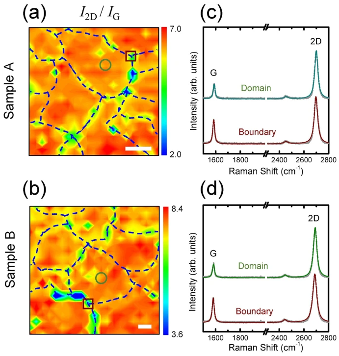
20.
T. Lee, F. A. Mas’ud,
M. J. Kim*
, H. Rho*, “Spatially resolved Raman spectroscopy of defects, strains, and strain fluctuations in domain structures of monolayer graphene” Scientific Reports 7, 16681 (2017)- corresponding author
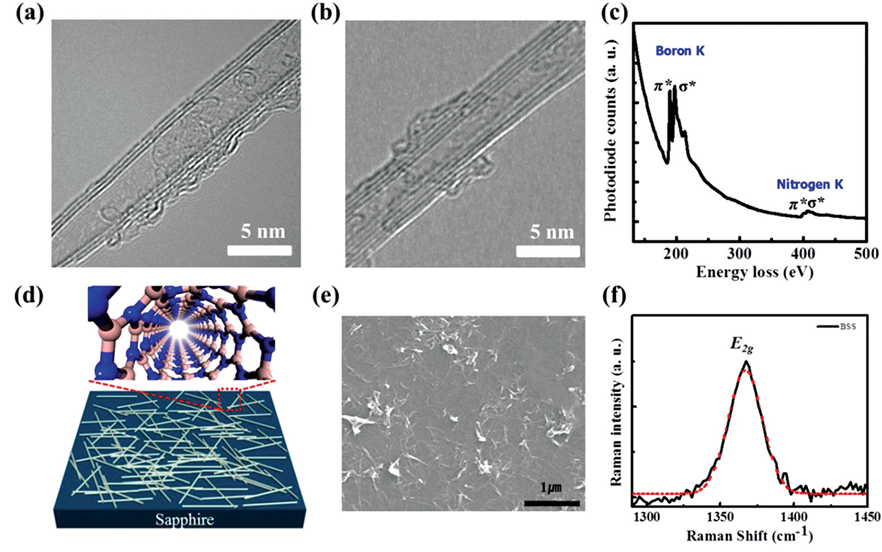
21.
T. H. Seo, G. H. Lee, A. H. Park, H. Cho, J-H. Kim, S. Chandramohan, S-R. Jeon, S-G. Jang,
M. J. Kim*
, E-K. Suh*, “Boron nitiride nanotube as a heat sinking and stress-relaxation layer for high performance light-emitting diode” Nanoscale 9, 16223 (2017)-corresponding author
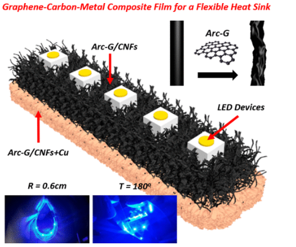
22.
H. Cho, H. Rho, J. H. Kim, S-H Chae, T. V. Pham, T. H. Seo, H. Y. Kim, J-S Ha, H. C. Kim, S. H. Lee*,
M. J. Kim*
, “Graphene-Carbon-Metal Composite Film for a Flexible Heat Sink” ACS AMI 9, 40801(2017)-corresponding author
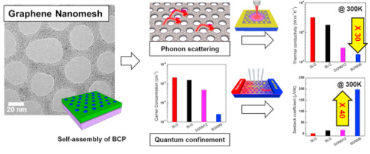
23.
J. Oh, H. Yoo, J. choi, J. Y. Kim, D. S. Lee,
M. J. Kim,
J-C Lee, W. N. Kim, J. C. Grossman, J. H. Park, S-S Lee, H. Kim, J. G. Son, “Signantly reduced thermal conductivity and enhanced thermoelectric properties of single- and bi-layer graphene nanomeshes with sub-10 nm neck-width” Nano Energy 35, 26 (2017)
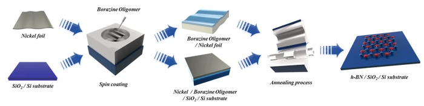
24.
S. Park, T. H. Seo, H. Cho, K. H. Min, D. S. Lee, D-I Won, S. O. Kang, and
M. J. Kim*
“Facile Synthesis of Highly Crystalline and Large Areal Hexagonal Boron Nitride from Borazine Oligomers” Scientific Reports 7, 40260 (2017) – corresponding author
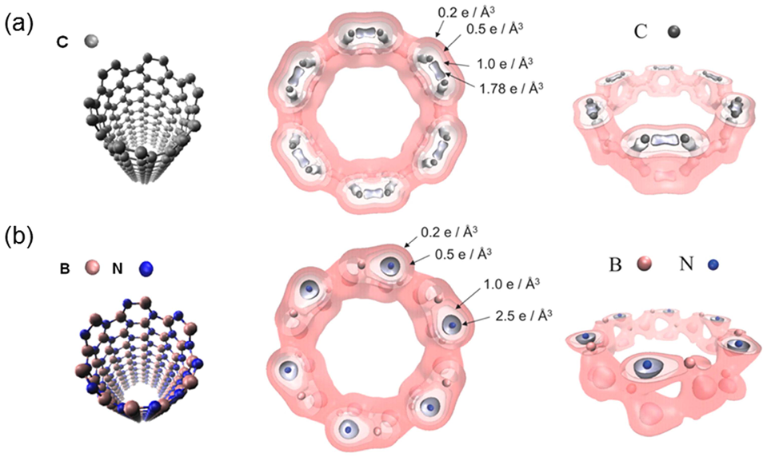
25.
K. S. Kim,
M. J. Kim,
C. Park, C. C. Fay, S-H Chu, C. T. Kingston, B. Simard, “Scalable manufacturing of boron nitride nanotubes and their assemblies: a review” Semicon. Sci. Technol. 32, 013003 (2017)
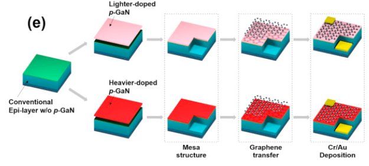
26.
J-H Min, T H Seo, S-B Choi, K. Kim, J-Y Lee, M-D Park,
M. J. Kim,
E-K Seo, J-R Kim, D-S Lee, “Effect of p-GaN hole concentration on the stabilization and performance of a graphene current spreading layer in near-ultraviolet light-emitting diodes” Curr. Appl. Phys. 16, 1382 (2016)
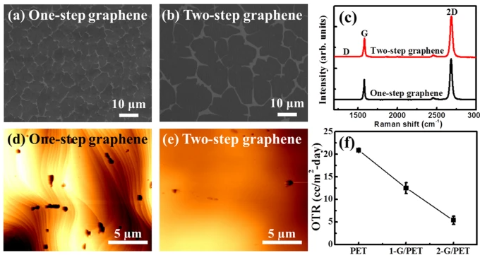
27.
T. H. Seo, S Lee, K. H. Min, S. Chandramohan, A. H. Park, G. H. Lee, M. Park, E-K Suh*,
M. J. Kim*
“The role of graphene formed on silver nanowire transparent conductive electrode in ultra-violet light emitting diodes” Scientific Reports 6, 29464 (2016) – corresponding author
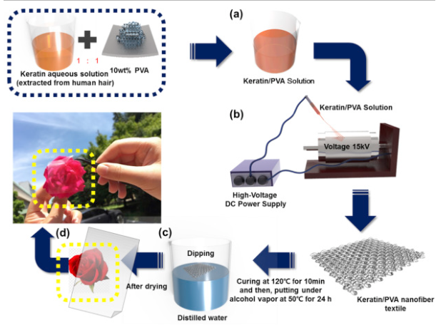
28.
M. Park, K. S. Lee, J. Shim, Y Liu, C. Lee, H. Cho,
M. J. Kim,
S-J Park, Y. J. Yun, H. Y. Kim, D. I. Son “Environment friendly, transparent nanofiber textiles consolidated with high efficiency PLEDs for wearable electronics” Organic Electronics 36, 89 (2016)
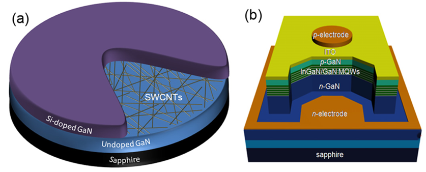
29.
A. H. Park, S. Chandramohan, T. H. Seo, G. H. Lee, K. H. Min, C-H Hong,
M. J. Kim,
E-K Suh “Carbon-nanotube-assisted nanoepitaxy of Si-doped GaN for improved performance of InGaN/GaN light-emitting diodes” Nanotechnology 27, 275602 (2016)
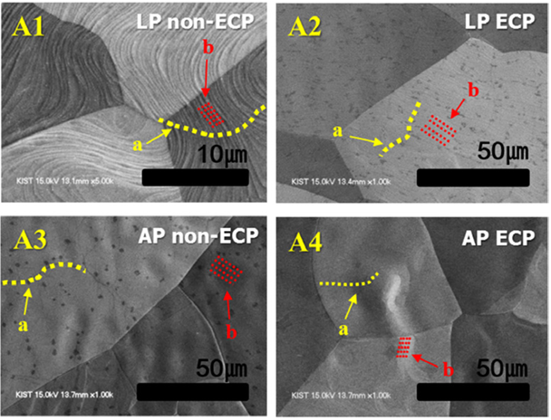
30.
F. A. Masud, H. Cho, T. Lee, H. Rho, T. H. Seo,
M. J. Kim*
“Domain size engineering of CVD graphene and its influence on physical properties” J. Phys. D:Appl. Phys. 49, 205504 (2016)-corresponding author
31.
T. H. Seo, S. Lee, H. Cho, S. Chandramohan, E-K Suh, H. S. Lee, S. K. Bae, S. M. Kim, M. Park, J. K. Lee,
M. J. Kim*
“ Tailored CVD graphene coating as a tansparent and flexible gas barrier” Scientific Reports 6, 24143 (2016)-corresponding author
32.
S-G Kim, N-H You, W. Lee, J. Y. Hwang,
M. J. Kim,
D. Hui, B-C Ku, J. H. Lee “Effects of the functinalized graphene oxide on the oxygen barrier and mechanical properties of layer-by-layer assembled films” Composite Part B 92, 307 (2016)
33.
Z. Khurelbaatar, Y-H Kil, K-H Shim, H. Cho,
M. J. Kim,
S-N Lee, J-C Jeong, H. Hong, C-J Choi “Schottky Barrier parameters and low frequency noise characteristics of graphene-germanium Schottky barrier diode” Superlattices and Microscturctures 91, 306 (2016)
34.
T. H. Seo, A. H. Park, S. B. Lee, G. H. Lee,
M. J. Kim*
, E-K Suh*, “Dual-Wavelength Light Emission from CdSe/ZnS Quantum Dots on Blue Light-Emitting Diodes” J. Nanoscience and Nanotechnology 15, 10037 (2015) –corresponding author
35.
A. H. Park, T. H. Seo, S. Chandramohan, G. H. Lee, K. H. Min, S. Lee,
M. J. Kim,
Y. G. Hwang and E-K Suh “Efficient stress-relaxation in InGaN/GaN light-emitting diodes using carbon nanotubes” Nanoscale 7, 15099 (2015)
36.
S-I Shin, Y-S Lim, M. J. Kim “Chirality assignment for metallic species via coherent phonon oscillations in arc-discharge single-walled carbon nanotubes” J. Kor. Phys. Soc. 67, 921 (2015)
37.
T. H. Seo, G. H. Lee, S. Park, S. Chandramohan, A. H. Park, H. Cho, M. Park,
M. J. Kim*
, and E-K Suh* “Hybrid electrode based on carbon nanotube and graphene for ultraviolet light-emitting diodes” Appl. Phys. Exp. 8, 102101 (2015) – co-corresponding author
38.
H. Cho, S. Park, J. H. Park, S. O. Kang, S-S Pyo, D-I Kim, H. C. Kim and
M. J. Kim*
“Growth kinetics of white graphene (h-BN) on a planarized Ni foil surface” Scientific Reports 5, 11985 (2015) – corresponding author
39.
J. Lee , E. Oh, T. Kim, J-H Sa, S- Lee, J. Park, D. Moon, I. S. Kang ,
M. J. Kim,
S. M. Kim, K-H Lee “The influence of boundary layer on the growth kinetics of carbon nanotube forests” Carbon 93, 217 (2015)
40.
S. Kim, T. H. Seo,
M. J. Kim,
K. M. Song, E-K Suh, and H. Kim “Graphene-GaN Schottky diodes” Nano Research 8, 1327 (2015)
41.
Z. Khurelbaatar, Y-H Kil, K-H Shim, H. Cho,
M. J. Kim,
Y-T Kim, C-J Choi “Temperature dependent current transport mechanism in graphene/germanium schkttky barrier diode” J. of Semicon. Tech. and Sci. 15, 7 (2015)
42.
J. Wang, Z. Wang, H. Cho,
M. J. Kim,
T. K. Sham, X. Sun, “Layer speciation and electronic structure investigation of greestanding hexagonal boron nitride nanosheets” Nanoscale, 7, 1718 (2015)
43.
T. H. Seo, A. H. Park, S. Park, S. chandramohan, G. H. Lee,
M. J. Kim,
C-H Hong, E-K Suh “Improving the graphene electrode performance in ultra-violet light emitting diode using silver nanowire networks” Opt. Mater. Exp. 5, 314 (2015)
44.
T. H. Seo, A. H. Park, S. Park, Y. H. Kim, G. H. Lee,
M. J. Kim,
M. S. Jeong, Y. H. Lee, Y-B Han, E-K Suh “Direct growth of GaN layer carbon nanotube-graphene hybrid structure and its application for light emitting diodes” Scientific Reports 5, 7747 (2015)
45.
I. Oh, H. Cho, J. Kang, S. Park, B. Ku, M. Park, S. Kwak, P. Khanra, J. H. Lee,
M. J. Kim*
, “Catalyst and doping methods for arc graphene” Nanotechnology 25, 445601 (2014) – corresponding author
46.
JH Kang, D. H. Shin, K. N. Yun, F. A. Masud, C. J. Lee,
M. J. Kim*
“Super growth of vertically-aligned carbon nanofibers and their field emission properties” Carbon 79, 149 (2014) –corresponding author
47.
T. H. Seo, A. H. Park, G. H. Lee,
M. J. Kim,
E-K Suh “Efficiency enhancement of nanorod green light emitting diodes employing silver nanowire-decorated graphene electrode as current spreading layer” J. of Phys. D: Appl. Phys. 47, 315102 (2014)
48.
M. J. Kim*
, JH Kang, M. Park “Chirality-controlled growth of single-walled carbon nanotubes via nanotube cloning” Macromolecular Research 22, 917 (2014) – corresponding author
49.
T. H. Seo, S. Kim,
M. J. Kim,
H. Kim, E-K Suh “Compound Ag nanocluster-graphene electrodes as transparent and current spreading electrodes for improved light output power in near-ultraviolet light emitting diodes” J. of Phys. D: Appl. Phys. 47 215103 (2014)
50.
T. H. Seo, GU Shin, B. K. Kim, C-J Choi, C. Lee,
M. J. Kim,
E-K Suh “ Enhancement of light output power in ultraviolet light emitting diodes using graphene film on self-assembled Au nanocluster by agglomeration process” J. of Appl. Phys.114, 223105 (2013)
51.
T. H. Seo, B. K. Kim, G. U. Shin, C. Lee,
M. J. Kim,
H. Kim, E-K Suh, “Graphene-silver nanowire hybrid structure as a transparent and current spreading electrode in ultraviolet light emitting diodes” Appl. Phys. Lett. 103, 051105 (2013)
52.
S-K Kim, H. Cho,
M. J. Kim*
, H-J Lee, J-H Park, Y-B Lee, H. C. Kim, C. W. Yoon, S. W. Nam, and S. O. Kang*, “Efficient catalytic conversion of ammonia borane to borazine and its use for hexagonal boron nitride” J. Mater. Chem. A 1, 1976 (2013) – corresponding author.
53.
H. Cho, C. Lee, I. S. Oh, S. Park, H. C. Kim, and
M. J. Kim*
, “Parametric Study of Methanol Chemical Vapor Deposition Growth for Graphene” Carbon Lett. 13, 205 (2012) - corresponding author
54.
S. Chatterjee,
M. J. Kim,
D. N. Zakharov, S. M. Kim, E. A. Stach, B. Maruyama, L. G. Sneddon, “Synthesies of Boron Nitride Nanotubes from Borazine and Decaborane Molecular Precursors by Catalytic Chemical Vapor Deposition with a Floating Nickel Catalyst”, Chem. Mater. 24, 2872 (2012)
55.
M. J. Kim,
I. G. Baek, Y. H. Ha, S. J. Baik, J. H. Kim, D. J. Seong, S. J. Kim, Y. H. Kwon, C. R. Lim, H. K. Park, D. Gilmer, P. Kirsch, R. Jammy, Y. G. Shin, S. Choi, C. Chung, “Low Power Operating Bipolar TMO ReRAM for Sub 10 nm Era”, IEDM 2010, 444-447, (2010)
56.
M. M. Guron, X. Wei, D. Welna, N. Krogan,
M. J. Kim,
H. Allock, L G. Sneddon, “Preceramic Polymer Blends as Precursors for Boron-Carbide/Silicon-Carbide Composite Ceramics and Ceramic Fibers”, Chem. Mater. 21, 1708, (2009)
57.
M. J. Kim,
S. Chatterjee, S. M. Kim, M. G. Bradley, M. J. Pender, E. A. Stach, L. G. Sneddon, and B. Maruyama, “Double-walled Boron Nitride Nanotubes Grown by Floating Catalyst Chemical Vapor Deposition”, Nano Lett., 8, 3298, (2008)
58.
M. M. Guron,
M. J. Kim,
and L. G. Sneddon, “A Simple Polymeric Precursor Strategy for the Synthesis of Complex Zirconium and Hafnium-based Ultra High Temperature Silicon-Carbide Composite Ceramics”, J. Am. Ceram. Soc., 91, 1412, (2008)
59.
M. J. Kim,
E. Haroz, Y. Wang, H. Shan, N. Nicholas, C. Kittrell, V. C. Moore, Y. Jung, D. Luzzi, R. Wheeler, T. BensonTolle, H. Fan, W. F. Hwang, T. J. Wainerdi, H. K. Schmidt, R. H. Hauge and R. E. Smalley., “Nanoscopically Flat Open-Ended Single-Walled Carbon Nanotube Substrates for Continued Growth”, Nano Lett., 7, 15 (2007).
60.
M. J. Kim,
N. Nicholas, C. Kittrell, E. Haroz, H. Shan, T. J. Wainerdi, S. Lee, H. Schmidt, R. E. Smalley, R. H. Hauge, “Efficient Transfer of a VA-SWNT Film by a Flip-Over Technique”, J. Am. Chem. Soc., 128, 9312 (2006 ).
61.
Y. Xu, E. Flor,
M. J. Kim,
B. Hamadani, H. Schmidt, R. E. Smalley, R. H. Hauge., “Vertical Array Growth of Small Diameter Single-walled Carbon Nanotubes”, J. Am. Chem. Soc., 128, 6560 (2006).
62.
Y. Wang, L. M. Ericson, C. Kittrell,
M. J. Kim,
H. Shan, H. Fan, S. Ripley, S. Ramesh, R. H. Hauge, W. W. Adams, M. Pasquali, and R. E. Smalley., “Revealing the Substructure of Single-Walled Carbon Nanotube Fibers”, Chem. Mater., 17, 6361 (2005).
63.
Y. Wang,
M. J. Kim,
H. W. Shan, C. Kittrell, H. Fan, L. Ericson, W. F. Hwang, S. Arepalli, R. H. Hauge and R. E. Smalley., “Continued Growth of Single-Walled Carbon Nanotubes”, Nano Lett., 5, 997 (2005)- highlighted as a cover article
64.
L. M. Ericson, H. Fan, H. Peng, V. A. Davis, W. Zhou, J. Sulpizio, Y. H. Wang, R. Booker, J. Vavro, C. Guthy, A. N. G. Parra-Vasquez,
M. J. Kim,
S. Ramesh, R. Saini, C. Kittrell, G. Lavin, H. Schimdt, W. W. Adams, W. E. Billups, M. Pasquali, W. H. Hwang, R. H. Hauge, J. E. Fischer and R. E. Smalley., “Macroscopic, Neat, Single-Walled Carbon Nanotube Fibers” Science, 305, 1447 (2004).
65.
Y. Wang, S. Da,
M. J. Kim,
K. F. Kelly, W. H. Guo, C. Kittrell, R. H. Hauge and R. E. Smalley., “Ultrathin “Bed-of-Nails” Membranes of Single-Wall Carbon Nonotubes”, J. Am. Chem. Soc., 126, 9502 (2004).
66.
M. F. Chisholm, Y. H. Wang, A. R. Lupini, G. Eres, A. A. Puretzky, B. Brinson, A. V. Melechko, D. B. Geohegan, H. T. Cui, M. P. Johnson, S. J. Pennycook, D. H. Lowndes, S. Arepalli, C. Kittrell, S. Sivaram, M. Kim, G. Lavin, J. Kono, R. Hauge and R. E. Smalley., Comment on “Single Crystals of Single-Walled Carbon Nanotubes formed by self-Assembly”, Science, 300,1236b (2003).